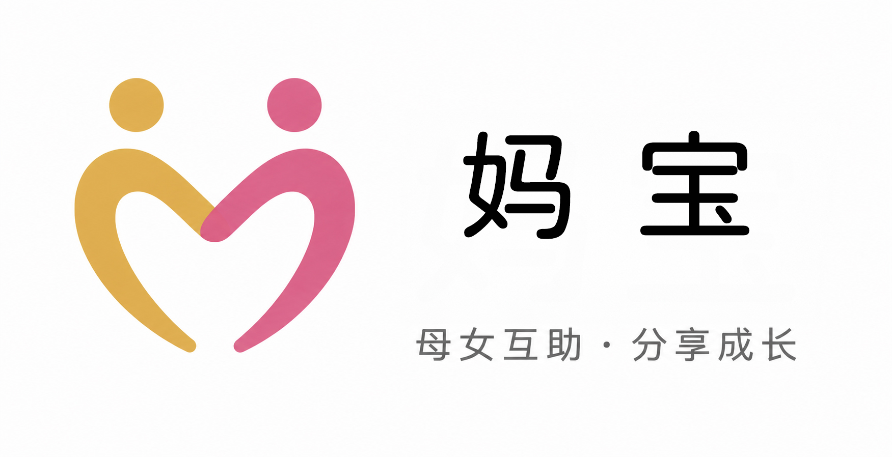
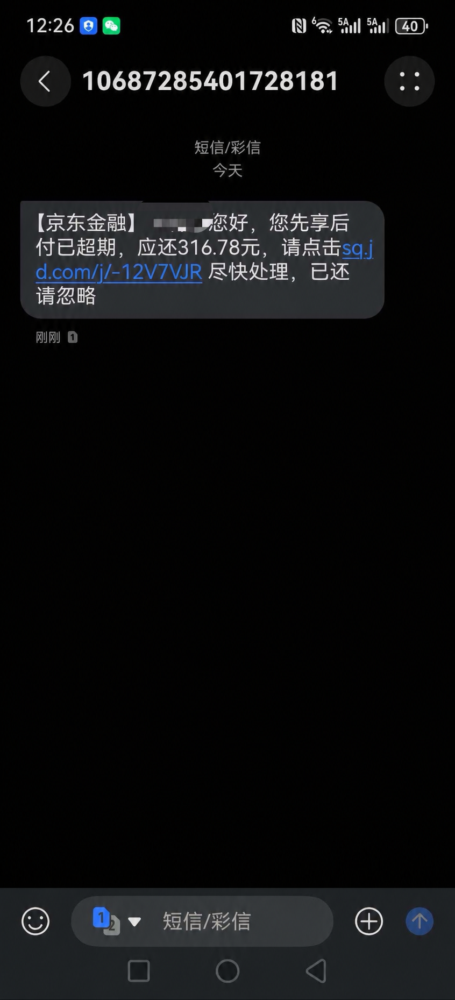
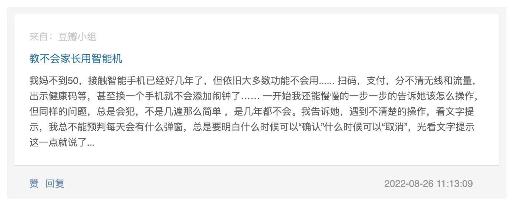
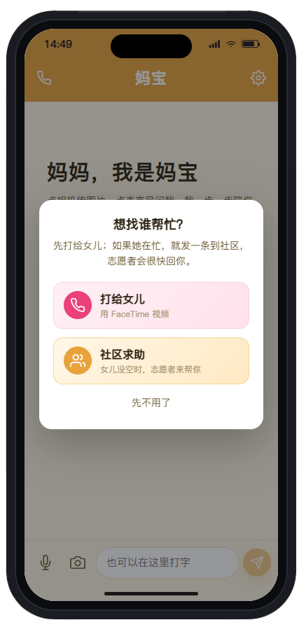
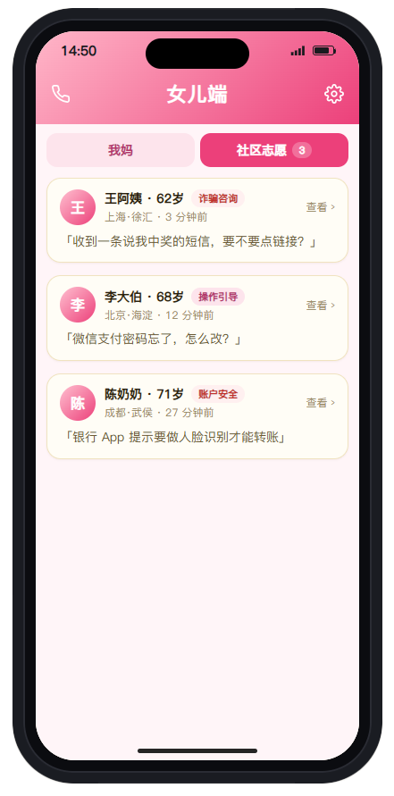

00 / 项目概要让妈妈、AI和女儿连接在一起
SHE NICEST × MOM · 母亲节黑客松
妈宝
我们做了一款把妈妈、女儿、AI聚集到单一窗口下的工具——
妈妈遇到智能手机使用问题时可以随时提问，
通过让 AI 调用本地应用、图文引导妈妈
让异地母女也能在一个群聊里有效地处理问题。
01 / 发生在项目现场的问题朋友妈妈在京东购物时被开通了白条
真实场景 · 队员现场听到
她不是不会用手机，
她是不知道刚才发生了什么。
队员 Anita 在比赛过程中听朋友说起：他的妈妈在京东购物时，不知情地用京东白条下了单——直到收到还款短信，妈妈才发现自己背了一笔从没主动开通过的贷款。
因为孩子在忙，最后是妈妈自己把这件事处理了。
换成妈妈这边，是 选择和知情权利的隐性剥夺，焦虑和无助的积累。
队员们为什么聚在一起做这件事
妈宝之家 · 5 个女儿的私心爸爸没有耐心教妈妈处理手机问题，我又不在身边。希望这个产品可以耐心地陪妈妈把问题解决。
妈妈很爱看网红短剧，经常陷入会员陷阱。我希望在我不能及时出现的时候，能有一种便捷的方式，帮她处理问题。
妈妈遇到的很多手机问题，并不是"不会用"这么简单——是被复杂的界面、模糊的规则、不断变化的平台流程挡在了外面。想让妈妈们在数字生活里更有安全感和掌控感。
离开家之后，妈妈遇到手机问题总是小心翼翼地求助别人。我希望减少这种无力感和沟通消耗。
我经常在路上遇到陌生阿姨找我处理手机问题——但因为异地，我自己的妈妈遇到问题，只能去手机店。
03 / 这不是一个家庭的难题社媒上反复出现的困惑
社媒 · 公开调研—— 2021 上海交大《老年人手机使用报告》

04 / 妈妈说不清的卡点，背后是一条机器在跑的链这才是我们真正担忧的
官方调研 · 主流媒体2025 年中
年均增长，2018–2025
环比激增
老年群体占比
从"不会用"到"被收割"
支撑这条链的核心机制：个人数据 → 标签画像 → 实时竞价 → 内容/广告/AI 内容定向投放。在年轻人身上是"广告打扰"，在妈妈身上是"精准利用"。
05 / 那这件事——已经有人在做了吗？4 类已有方案，4 种结构性失效
竞品 / 替代品 失效复盘妈妈打电话/视频找女儿
但女儿在加班、在出差；妈妈隔着屏幕描述不清"现在屏幕上发生了什么"，女儿只能反复追问"你点哪里了？再点回去？"——一通电话下来双方都崩溃。
把妈妈直接交给 AI（豆包 / Siri / 长辈版小爱）
AI 接得住"明确指令"，但接不住含混、矛盾、需要真实生活背景的求助——"我也从不清楚会员从哪来的""我刚才好像点了什么不该点的"。AI 并不了解妈妈的生活习惯和家庭语境。
去手机店 / 营业厅
能解决"一次性配置"——装好长辈模式、关好弹窗。但解决不了"明天晚上 11 点又冒出一个新弹窗"这种持续陪伴的需求。妈妈不会专门为一条短信再去一趟营业厅。
FaceTime 共享屏幕 / 华为远程协助 / 微信视频
三道隐形门槛：(1) 妈妈要会找入口、要会同意权限；(2) 需要多台设备；(3) 女儿不在线的瞬间，工具就无用了。也无法把每次解决沉淀下来。
06 / 一段 60 秒的现场Demo · 妈妈和我，隔着屏幕完成一次互助
视频 Demo07 / 拓展与想象当女儿不在线 — 一个由女儿信任的人组成的志愿者社区
Roadmap · 下一步拓展

- 1邀请制 · 只由女儿派发邀请码
社区不开放注册，只有女儿能向自己信任的朋友发出邀请码，可信度由女儿背书。 - 2触发 · 妈妈自己点了才会求助
女儿一键开/关妈妈的求助权限，志愿者不会主动联系妈妈。 - 3电话直接接洽，不加微信
第一个有空的志愿者直接接听妈妈电话，不必加好友、不必入群。 - 4AI 全程旁听兜底
识别到要钱要密码等异常话术会立即打断并通知女儿。 - 5事后女儿可回看
完整记录沉淀出"女儿们都信得过的人"名单。
08 / 来自妈妈的回声妈妈看完我们的产品后，发来了反馈
用户回声 · For Mom也能缓解问题背后隐性的焦虑；
用关怀型的细节设计，
帮助妈妈自如地使用手机。"
它应该帮助人变得更好，
连接使用它的母女
让她在手机面前，重新拥有自如。